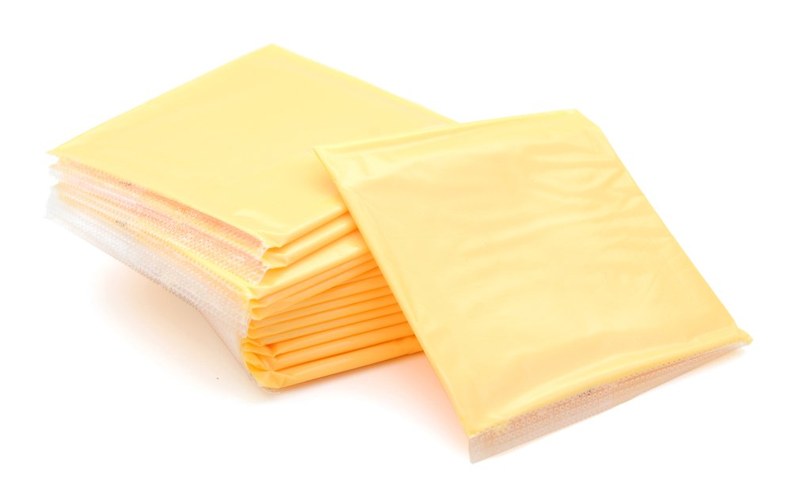
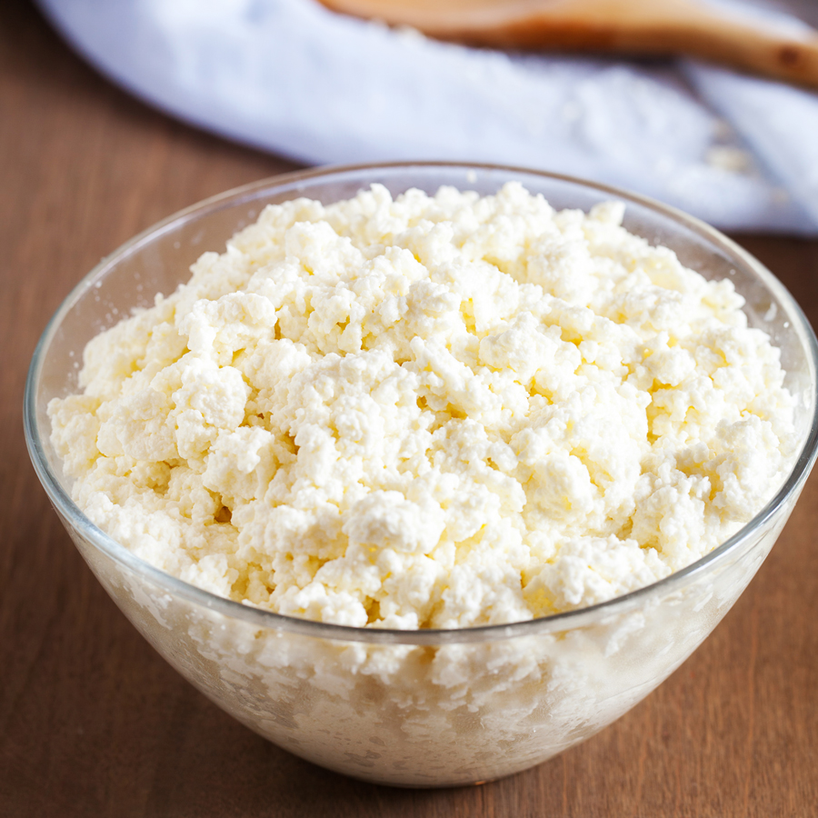
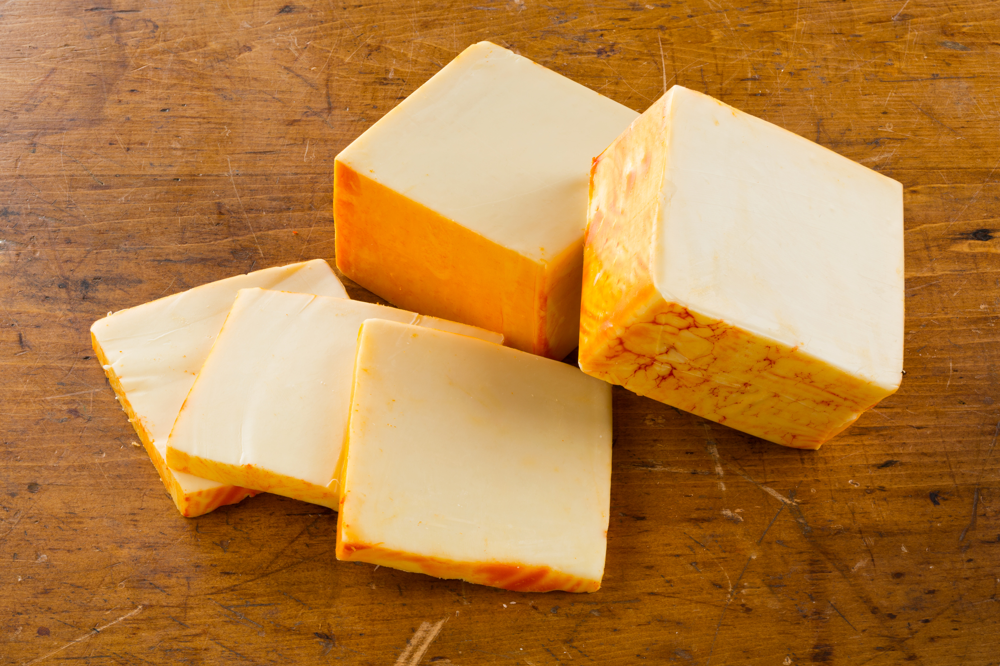
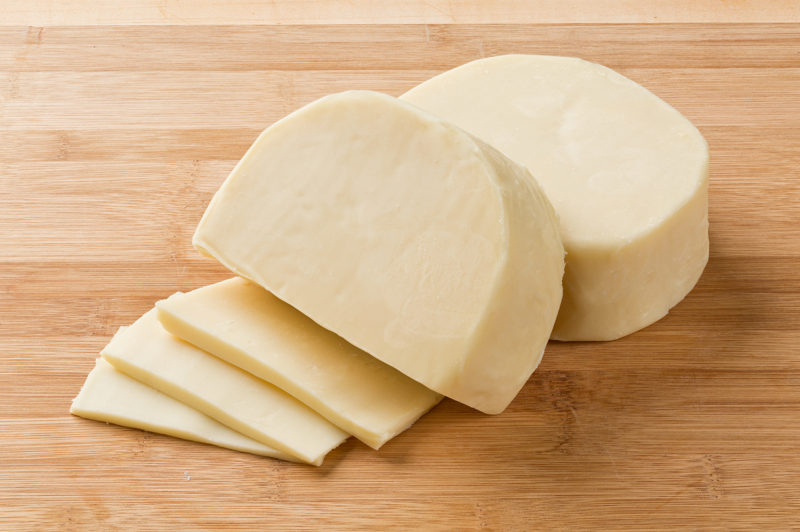
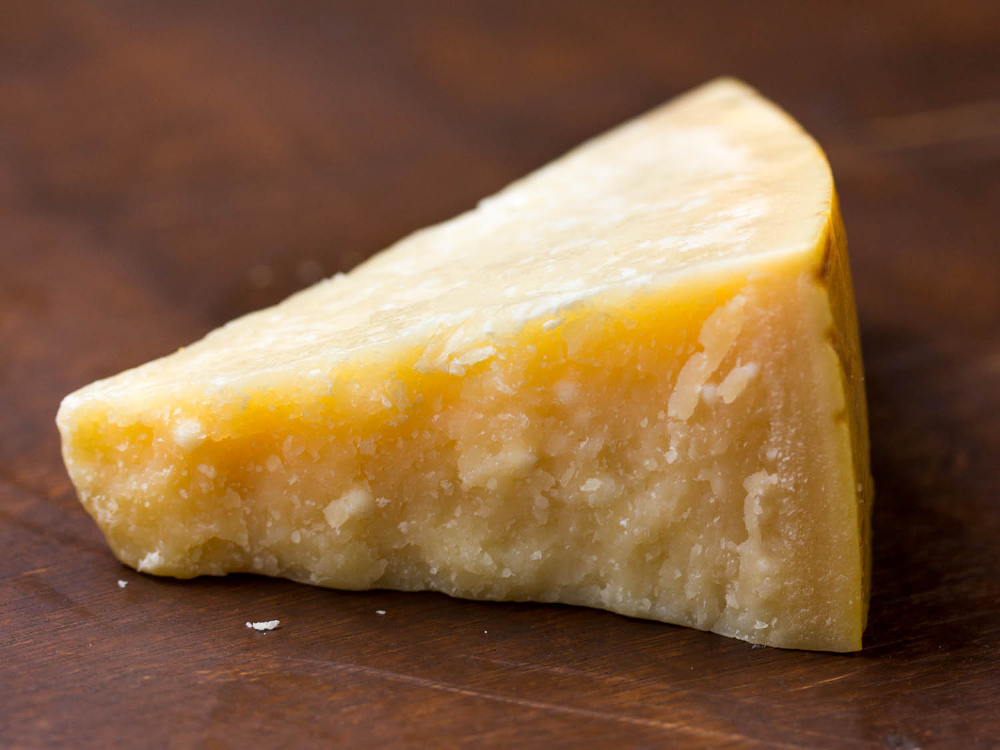

| Cheese Type | Examples | Pictures |
|---|---|---|
| Processed | Cheese Spreads and American |  |
| Fresh Cheese | Cottage and Ricotta |  |
| Soft Cheese | Brie and Camembert |  |
| Semisoft Cheese | Muenster and Talleggio |  |
| Hard Cheese | Provolone and Cheddar |  |
| Grating Cheese | Parmesan and Castelmagno |  |